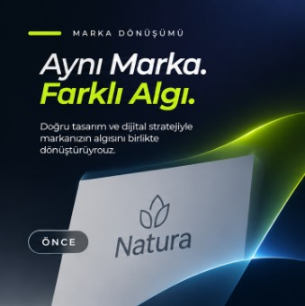
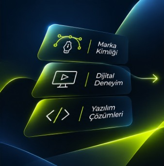
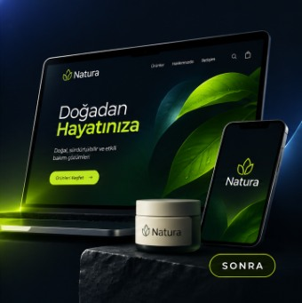

Marka yönü
Hedef kitle, marka kişiliği ve iletişim önceliklerini birlikte tarif ederiz. Tasarım kararlarını bu çerçeveye bağlarız.

Markanın neyi temsil ettiğini görünür, tutarlı ve uygulanabilir bir tasarım diline dönüştürelim.
Markasını ilk kez kuran, görsel dilini yenileyen veya web ile sosyal medya kanallarında tutarlılık arayan işletmeler ve ürün ekipleri için.
Tipik çalışma süresi kapsam büyüklüğüne göre 2 ile 5 hafta arasındadır.
Hedef kitle, marka kişiliği ve iletişim önceliklerini birlikte tarif ederiz. Tasarım kararlarını bu çerçeveye bağlarız.
Logo kullanımı, renk paleti, tipografi ve kompozisyon ilkelerini bir sistem olarak ele alırız.
Web, sosyal medya ve sunum gibi öncelikli temas noktalarında kimliğin nasıl çalışacağını gösteririz.
Nihai teslim listesi projenin kapsamına göre teklif aşamasında kesinleşir.
Bu bağımsız konsept, yaklaşımımızın görsel bir örneğidir.



Evet. Ön görüşmede ihtiyacı ve teslim dosyalarını belirleriz. Daha geniş bir kimlik sistemi gerekip gerekmediğini de birlikte değerlendiririz.
Mevcut kimliği inceleyerek renk, tipografi ve dijital kullanım kurallarını geliştirebiliriz. Yeniden tasarım ihtiyaca bağlıdır.
Sunum ve geri bildirim turları proje kapsamına yazılır. Yeni ihtiyaçların süreye ve kapsama etkisi ayrıca değerlendirilir.
Fikrin net olabilir. Henüz bir sorudan ibaret de olabilir. İhtiyacı birlikte tarif edebiliriz.
Bu hizmet için yaz